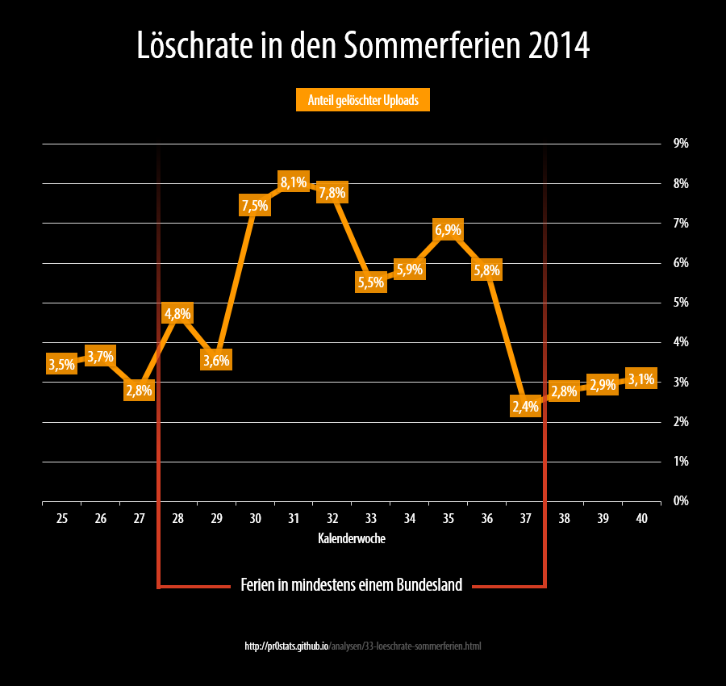

Löschrate in den Sommerferien 2014
auf pr0gramm

Methodik
- siehe Hinweise zur Methodik
- Datenstand
24/10/2014
- Daten über Sommerferien von schulferien.org
- Die Löschrate wurde durch den Quotienten der Summe der in der DB existierenden Uploads und der Differenz der vergebenen IDs berechnet.
SELECT WEEKOFYEAR(FROM_UNIXTIME(created)) `week_num`, (1-count(id)/(MAX(id)-MIN(id))) `del_rate` FROM uploads WHERE `created` BETWEEN UNIX_TIMESTAMP("2014-06-16 00:00:00") AND UNIX_TIMESTAMP("2014-10-05 23:59:59") GROUP BY `week_num`
Resultate
- Die Löschrate steigt in der Ferienzeit auf mehr als das doppelte der normalen Werte an. Damit steigt wahrscheinlich die Repostrate während die durchschnittliche Qualität sinkt.